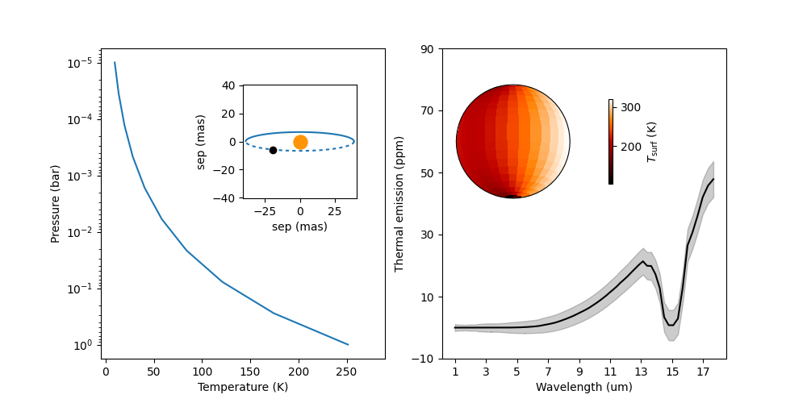

Note
Go to the end to download the full example code
Make a phase curve GIF#
This example turns a phase curve into a gif.
from pathlib import Path
import os
import numpy as np
import matplotlib.pyplot as plt
from astropy import units as u
from imageio.v2 import imread, mimsave
from cartopy import crs as ccrs
import pypsg
from pypsg.globes import GCMdecoder, PyGCM
from VSPEC import ObservationModel,PhaseAnalyzer
from VSPEC.geometry import SystemGeometry
try:
CONFIG_PATH = Path(__file__).parent / 'phase_gif.yaml'
except NameError:
CONFIG_PATH = Path('phase_gif.yaml')
pypsg.docker.set_url_and_run()
Saved settings to /home/ted/.pypsg/settings.json
Reloading settings...
Load in the configuration#
It is stored in a YAML file.
model = ObservationModel.from_yaml(CONFIG_PATH)
model.build_planet()
model.build_spectra()
/home/ted/github/VSPEC/VSPEC/gcm/heat_transfer.py:538: RuntimeWarning: Energy balance off by -6.5 %. eps = 3.0, T0 = 0.5
warnings.warn(msg, RuntimeWarning)
Starting at phase 0.0 deg, observe for 10.0 d in 120 steps
Phases = [ 0. 3. 6. 9. 12. 15. 18. 21. 24. 27. 30. 33. 36. 39.
42. 45. 48. 51. 54. 57. 60. 63. 66. 69. 72. 75. 78. 81.
84. 87. 90. 93. 96. 99. 102. 105. 108. 111. 114. 117. 120. 123.
126. 129. 132. 135. 138. 141. 144. 147. 150. 153. 156. 159. 162. 165.
168. 171. 174. 177. 180. 183. 186. 189. 192. 195. 198. 201. 204. 207.
210. 213. 216. 219. 222. 225. 228. 231. 234. 237. 240. 243. 246. 249.
252. 255. 258. 261. 264. 267. 270. 273. 276. 279. 282. 285. 288. 291.
294. 297. 300. 303. 306. 309. 312. 315. 318. 321. 324. 327. 330. 333.
336. 339. 342. 345. 348. 351. 354. 357. 0.] deg
Build Planet: 0%| | 0/120 [00:00<?, ?it/s]
Build Planet: 1%| | 1/120 [00:00<00:17, 6.82it/s]
Build Planet: 2%|▏ | 2/120 [00:00<00:17, 6.91it/s]
Build Planet: 2%|▎ | 3/120 [00:00<00:16, 7.07it/s]
Build Planet: 3%|▎ | 4/120 [00:00<00:17, 6.75it/s]
Build Planet: 4%|▍ | 5/120 [00:00<00:17, 6.72it/s]
Build Planet: 5%|▌ | 6/120 [00:00<00:16, 6.73it/s]
Build Planet: 6%|▌ | 7/120 [00:01<00:16, 6.99it/s]
Build Planet: 7%|▋ | 8/120 [00:01<00:16, 6.98it/s]
Build Planet: 8%|▊ | 9/120 [00:01<00:15, 6.96it/s]
Build Planet: 8%|▊ | 10/120 [00:01<00:15, 7.14it/s]
Build Planet: 9%|▉ | 11/120 [00:01<00:15, 7.09it/s]
Build Planet: 10%|█ | 12/120 [00:01<00:15, 7.14it/s]
Build Planet: 11%|█ | 13/120 [00:01<00:15, 7.11it/s]
Build Planet: 12%|█▏ | 14/120 [00:02<00:14, 7.11it/s]
Build Planet: 12%|█▎ | 15/120 [00:02<00:14, 7.10it/s]
Build Planet: 13%|█▎ | 16/120 [00:02<00:14, 7.03it/s]
Build Planet: 14%|█▍ | 17/120 [00:02<00:15, 6.67it/s]
Build Planet: 15%|█▌ | 18/120 [00:02<00:15, 6.42it/s]
Build Planet: 16%|█▌ | 19/120 [00:02<00:15, 6.61it/s]
Build Planet: 17%|█▋ | 20/120 [00:02<00:14, 6.71it/s]
Build Planet: 18%|█▊ | 21/120 [00:03<00:14, 6.73it/s]
Build Planet: 18%|█▊ | 22/120 [00:03<00:14, 6.82it/s]
Build Planet: 19%|█▉ | 23/120 [00:03<00:14, 6.73it/s]
Build Planet: 20%|██ | 24/120 [00:03<00:14, 6.75it/s]
Build Planet: 21%|██ | 25/120 [00:03<00:14, 6.61it/s]
Build Planet: 22%|██▏ | 26/120 [00:03<00:14, 6.57it/s]
Build Planet: 22%|██▎ | 27/120 [00:03<00:14, 6.30it/s]
Build Planet: 23%|██▎ | 28/120 [00:04<00:14, 6.16it/s]
Build Planet: 24%|██▍ | 29/120 [00:04<00:15, 6.02it/s]
Build Planet: 25%|██▌ | 30/120 [00:04<00:14, 6.06it/s]
Build Planet: 26%|██▌ | 31/120 [00:04<00:14, 6.14it/s]
Build Planet: 27%|██▋ | 32/120 [00:04<00:14, 6.24it/s]
Build Planet: 28%|██▊ | 33/120 [00:04<00:13, 6.46it/s]
Build Planet: 28%|██▊ | 34/120 [00:05<00:13, 6.47it/s]
Build Planet: 29%|██▉ | 35/120 [00:05<00:13, 6.32it/s]
Build Planet: 30%|███ | 36/120 [00:05<00:12, 6.49it/s]
Build Planet: 31%|███ | 37/120 [00:05<00:12, 6.49it/s]
Build Planet: 32%|███▏ | 38/120 [00:05<00:13, 6.31it/s]
Build Planet: 32%|███▎ | 39/120 [00:05<00:12, 6.38it/s]
Build Planet: 33%|███▎ | 40/120 [00:06<00:12, 6.44it/s]
Build Planet: 34%|███▍ | 41/120 [00:06<00:12, 6.34it/s]
Build Planet: 35%|███▌ | 42/120 [00:06<00:12, 6.34it/s]
Build Planet: 36%|███▌ | 43/120 [00:06<00:11, 6.44it/s]
Build Planet: 37%|███▋ | 44/120 [00:06<00:11, 6.41it/s]
Build Planet: 38%|███▊ | 45/120 [00:06<00:11, 6.30it/s]
Build Planet: 38%|███▊ | 46/120 [00:06<00:11, 6.39it/s]
Build Planet: 39%|███▉ | 47/120 [00:07<00:11, 6.46it/s]
Build Planet: 40%|████ | 48/120 [00:07<00:10, 6.56it/s]
Build Planet: 41%|████ | 49/120 [00:07<00:10, 6.62it/s]
Build Planet: 42%|████▏ | 50/120 [00:07<00:10, 6.56it/s]
Build Planet: 42%|████▎ | 51/120 [00:07<00:10, 6.33it/s]
Build Planet: 43%|████▎ | 52/120 [00:07<00:10, 6.40it/s]
Build Planet: 44%|████▍ | 53/120 [00:08<00:10, 6.47it/s]
Build Planet: 45%|████▌ | 54/120 [00:08<00:10, 6.51it/s]
Build Planet: 46%|████▌ | 55/120 [00:08<00:10, 6.49it/s]
Build Planet: 47%|████▋ | 56/120 [00:08<00:09, 6.54it/s]
Build Planet: 48%|████▊ | 57/120 [00:08<00:09, 6.40it/s]
Build Planet: 48%|████▊ | 58/120 [00:08<00:09, 6.46it/s]
Build Planet: 49%|████▉ | 59/120 [00:08<00:09, 6.36it/s]
Build Planet: 50%|█████ | 60/120 [00:09<00:09, 6.45it/s]
Build Planet: 51%|█████ | 61/120 [00:09<00:09, 6.52it/s]
Build Planet: 52%|█████▏ | 62/120 [00:09<00:08, 6.49it/s]
Build Planet: 52%|█████▎ | 63/120 [00:09<00:08, 6.35it/s]
Build Planet: 53%|█████▎ | 64/120 [00:09<00:08, 6.39it/s]
Build Planet: 54%|█████▍ | 65/120 [00:09<00:08, 6.23it/s]
Build Planet: 55%|█████▌ | 66/120 [00:10<00:08, 6.05it/s]
Build Planet: 56%|█████▌ | 67/120 [00:10<00:08, 6.13it/s]
Build Planet: 57%|█████▋ | 68/120 [00:10<00:08, 6.14it/s]
Build Planet: 57%|█████▊ | 69/120 [00:10<00:08, 6.11it/s]
Build Planet: 58%|█████▊ | 70/120 [00:10<00:08, 6.02it/s]
Build Planet: 59%|█████▉ | 71/120 [00:10<00:08, 5.95it/s]
Build Planet: 60%|██████ | 72/120 [00:11<00:07, 6.02it/s]
Build Planet: 61%|██████ | 73/120 [00:11<00:07, 5.99it/s]
Build Planet: 62%|██████▏ | 74/120 [00:11<00:07, 6.05it/s]
Build Planet: 62%|██████▎ | 75/120 [00:11<00:07, 5.86it/s]
Build Planet: 63%|██████▎ | 76/120 [00:11<00:07, 5.74it/s]
Build Planet: 64%|██████▍ | 77/120 [00:11<00:07, 5.71it/s]
Build Planet: 65%|██████▌ | 78/120 [00:12<00:07, 5.60it/s]
Build Planet: 66%|██████▌ | 79/120 [00:12<00:07, 5.60it/s]
Build Planet: 67%|██████▋ | 80/120 [00:12<00:07, 5.60it/s]
Build Planet: 68%|██████▊ | 81/120 [00:12<00:06, 5.58it/s]
Build Planet: 68%|██████▊ | 82/120 [00:12<00:06, 5.64it/s]
Build Planet: 69%|██████▉ | 83/120 [00:13<00:06, 5.73it/s]
Build Planet: 70%|███████ | 84/120 [00:13<00:06, 5.61it/s]
Build Planet: 71%|███████ | 85/120 [00:13<00:06, 5.49it/s]
Build Planet: 72%|███████▏ | 86/120 [00:13<00:06, 5.41it/s]
Build Planet: 72%|███████▎ | 87/120 [00:13<00:06, 5.44it/s]
Build Planet: 73%|███████▎ | 88/120 [00:13<00:05, 5.43it/s]
Build Planet: 74%|███████▍ | 89/120 [00:14<00:05, 5.53it/s]
Build Planet: 75%|███████▌ | 90/120 [00:14<00:05, 5.56it/s]
Build Planet: 76%|███████▌ | 91/120 [00:14<00:05, 5.59it/s]
Build Planet: 77%|███████▋ | 92/120 [00:14<00:05, 5.57it/s]
Build Planet: 78%|███████▊ | 93/120 [00:14<00:04, 5.53it/s]
Build Planet: 78%|███████▊ | 94/120 [00:15<00:04, 5.59it/s]
Build Planet: 79%|███████▉ | 95/120 [00:15<00:04, 5.50it/s]
Build Planet: 80%|████████ | 96/120 [00:15<00:04, 5.47it/s]
Build Planet: 81%|████████ | 97/120 [00:15<00:04, 5.48it/s]
Build Planet: 82%|████████▏ | 98/120 [00:15<00:03, 5.61it/s]
Build Planet: 82%|████████▎ | 99/120 [00:15<00:03, 5.69it/s]
Build Planet: 83%|████████▎ | 100/120 [00:16<00:03, 5.52it/s]
Build Planet: 84%|████████▍ | 101/120 [00:16<00:03, 5.60it/s]
Build Planet: 85%|████████▌ | 102/120 [00:16<00:03, 5.67it/s]/home/ted/github/VSPEC/VSPEC/gcm/heat_transfer.py:538: RuntimeWarning: Energy balance off by -6.5 %. eps = 3.0, T0 = 0.5
warnings.warn(msg, RuntimeWarning)
Build Planet: 86%|████████▌ | 103/120 [00:16<00:02, 5.70it/s]
Build Planet: 87%|████████▋ | 104/120 [00:16<00:02, 6.14it/s]
Build Planet: 88%|████████▊ | 105/120 [00:16<00:02, 6.46it/s]
Build Planet: 88%|████████▊ | 106/120 [00:17<00:02, 6.57it/s]
Build Planet: 89%|████████▉ | 107/120 [00:17<00:01, 6.68it/s]
Build Planet: 90%|█████████ | 108/120 [00:17<00:01, 6.95it/s]
Build Planet: 91%|█████████ | 109/120 [00:17<00:01, 7.03it/s]
Build Planet: 92%|█████████▏| 110/120 [00:17<00:01, 6.98it/s]
Build Planet: 92%|█████████▎| 111/120 [00:17<00:01, 7.00it/s]
Build Planet: 93%|█████████▎| 112/120 [00:17<00:01, 6.97it/s]
Build Planet: 94%|█████████▍| 113/120 [00:18<00:01, 6.77it/s]
Build Planet: 95%|█████████▌| 114/120 [00:18<00:00, 6.93it/s]
Build Planet: 96%|█████████▌| 115/120 [00:18<00:00, 6.95it/s]
Build Planet: 97%|█████████▋| 116/120 [00:18<00:00, 7.01it/s]
Build Planet: 98%|█████████▊| 117/120 [00:18<00:00, 7.09it/s]
Build Planet: 98%|█████████▊| 118/120 [00:18<00:00, 7.14it/s]
Build Planet: 99%|█████████▉| 119/120 [00:18<00:00, 7.14it/s]
Build Planet: 100%|██████████| 120/120 [00:19<00:00, 7.14it/s]
Build Planet: 121it [00:19, 7.11it/s]
Build Planet: 121it [00:19, 6.31it/s]
Build Spectra: 0%| | 0/120 [00:00<?, ?it/s]
Loading Spectra: 0%| | 0/3 [00:00<?, ?it/s]
Loading Spectra: 33%|███▎ | 1/3 [00:00<00:00, 3.44it/s]
Loading Spectra: 67%|██████▋ | 2/3 [00:00<00:00, 3.43it/s]
Loading Spectra: 100%|██████████| 3/3 [00:00<00:00, 3.44it/s]
Loading Spectra: 100%|██████████| 3/3 [00:00<00:00, 3.44it/s]
Build Spectra: 1%| | 1/120 [00:01<02:14, 1.13s/it]
Build Spectra: 2%|▏ | 2/120 [00:01<01:12, 1.63it/s]
Build Spectra: 2%|▎ | 3/120 [00:01<00:52, 2.23it/s]
Build Spectra: 3%|▎ | 4/120 [00:01<00:42, 2.72it/s]
Build Spectra: 4%|▍ | 5/120 [00:02<00:37, 3.09it/s]
Build Spectra: 5%|▌ | 6/120 [00:02<00:33, 3.37it/s]
Build Spectra: 6%|▌ | 7/120 [00:02<00:31, 3.57it/s]
Build Spectra: 7%|▋ | 8/120 [00:02<00:30, 3.68it/s]
Build Spectra: 8%|▊ | 9/120 [00:03<00:29, 3.76it/s]
Build Spectra: 8%|▊ | 10/120 [00:03<00:28, 3.80it/s]
Build Spectra: 9%|▉ | 11/120 [00:03<00:28, 3.87it/s]
Build Spectra: 10%|█ | 12/120 [00:03<00:27, 3.92it/s]
Build Spectra: 11%|█ | 13/120 [00:04<00:27, 3.93it/s]
Build Spectra: 12%|█▏ | 14/120 [00:04<00:27, 3.92it/s]
Build Spectra: 12%|█▎ | 15/120 [00:04<00:26, 3.94it/s]
Build Spectra: 13%|█▎ | 16/120 [00:04<00:26, 3.94it/s]
Build Spectra: 14%|█▍ | 17/120 [00:05<00:26, 3.94it/s]
Build Spectra: 15%|█▌ | 18/120 [00:05<00:25, 3.96it/s]
Build Spectra: 16%|█▌ | 19/120 [00:05<00:25, 3.99it/s]
Build Spectra: 17%|█▋ | 20/120 [00:05<00:24, 4.00it/s]
Build Spectra: 18%|█▊ | 21/120 [00:06<00:24, 4.00it/s]
Build Spectra: 18%|█▊ | 22/120 [00:06<00:24, 3.95it/s]
Build Spectra: 19%|█▉ | 23/120 [00:06<00:24, 3.98it/s]
Build Spectra: 20%|██ | 24/120 [00:06<00:24, 3.99it/s]
Build Spectra: 21%|██ | 25/120 [00:07<00:26, 3.63it/s]
Build Spectra: 22%|██▏ | 26/120 [00:07<00:25, 3.74it/s]
Build Spectra: 22%|██▎ | 27/120 [00:07<00:24, 3.83it/s]
Build Spectra: 23%|██▎ | 28/120 [00:07<00:23, 3.85it/s]
Build Spectra: 24%|██▍ | 29/120 [00:08<00:23, 3.89it/s]
Build Spectra: 25%|██▌ | 30/120 [00:08<00:23, 3.90it/s]
Build Spectra: 26%|██▌ | 31/120 [00:08<00:22, 3.93it/s]
Build Spectra: 27%|██▋ | 32/120 [00:08<00:22, 3.97it/s]
Build Spectra: 28%|██▊ | 33/120 [00:09<00:21, 3.99it/s]
Build Spectra: 28%|██▊ | 34/120 [00:09<00:21, 4.00it/s]
Build Spectra: 29%|██▉ | 35/120 [00:09<00:21, 4.01it/s]
Build Spectra: 30%|███ | 36/120 [00:09<00:20, 4.02it/s]
Build Spectra: 31%|███ | 37/120 [00:10<00:20, 4.02it/s]
Build Spectra: 32%|███▏ | 38/120 [00:10<00:20, 4.02it/s]
Build Spectra: 32%|███▎ | 39/120 [00:10<00:20, 4.02it/s]
Build Spectra: 33%|███▎ | 40/120 [00:10<00:19, 4.03it/s]
Build Spectra: 34%|███▍ | 41/120 [00:11<00:19, 4.03it/s]
Build Spectra: 35%|███▌ | 42/120 [00:11<00:19, 4.04it/s]
Build Spectra: 36%|███▌ | 43/120 [00:11<00:19, 4.04it/s]
Build Spectra: 37%|███▋ | 44/120 [00:11<00:18, 4.04it/s]
Build Spectra: 38%|███▊ | 45/120 [00:12<00:18, 4.04it/s]
Build Spectra: 38%|███▊ | 46/120 [00:12<00:18, 4.04it/s]
Build Spectra: 39%|███▉ | 47/120 [00:12<00:18, 4.04it/s]
Build Spectra: 40%|████ | 48/120 [00:12<00:17, 4.04it/s]
Build Spectra: 41%|████ | 49/120 [00:13<00:17, 4.03it/s]
Build Spectra: 42%|████▏ | 50/120 [00:13<00:17, 4.03it/s]
Build Spectra: 42%|████▎ | 51/120 [00:13<00:17, 4.03it/s]
Build Spectra: 43%|████▎ | 52/120 [00:13<00:16, 4.03it/s]
Build Spectra: 44%|████▍ | 53/120 [00:14<00:16, 4.03it/s]
Build Spectra: 45%|████▌ | 54/120 [00:14<00:16, 4.01it/s]
Build Spectra: 46%|████▌ | 55/120 [00:14<00:16, 4.02it/s]
Build Spectra: 47%|████▋ | 56/120 [00:14<00:15, 4.02it/s]
Build Spectra: 48%|████▊ | 57/120 [00:15<00:15, 4.01it/s]
Build Spectra: 48%|████▊ | 58/120 [00:15<00:15, 4.01it/s]
Build Spectra: 49%|████▉ | 59/120 [00:15<00:15, 4.01it/s]
Build Spectra: 50%|█████ | 60/120 [00:15<00:14, 4.02it/s]
Build Spectra: 51%|█████ | 61/120 [00:16<00:14, 4.02it/s]
Build Spectra: 52%|█████▏ | 62/120 [00:16<00:14, 4.03it/s]
Build Spectra: 52%|█████▎ | 63/120 [00:16<00:14, 4.02it/s]
Build Spectra: 53%|█████▎ | 64/120 [00:16<00:13, 4.04it/s]
Build Spectra: 54%|█████▍ | 65/120 [00:17<00:13, 4.05it/s]
Build Spectra: 55%|█████▌ | 66/120 [00:17<00:13, 4.06it/s]
Build Spectra: 56%|█████▌ | 67/120 [00:17<00:13, 4.06it/s]
Build Spectra: 57%|█████▋ | 68/120 [00:17<00:12, 4.07it/s]
Build Spectra: 57%|█████▊ | 69/120 [00:18<00:12, 4.07it/s]
Build Spectra: 58%|█████▊ | 70/120 [00:18<00:12, 4.07it/s]
Build Spectra: 59%|█████▉ | 71/120 [00:18<00:12, 4.07it/s]
Build Spectra: 60%|██████ | 72/120 [00:18<00:11, 4.07it/s]
Build Spectra: 61%|██████ | 73/120 [00:19<00:11, 4.07it/s]
Build Spectra: 62%|██████▏ | 74/120 [00:19<00:11, 4.07it/s]
Build Spectra: 62%|██████▎ | 75/120 [00:19<00:11, 4.06it/s]
Build Spectra: 63%|██████▎ | 76/120 [00:19<00:10, 4.07it/s]
Build Spectra: 64%|██████▍ | 77/120 [00:20<00:10, 4.05it/s]
Build Spectra: 65%|██████▌ | 78/120 [00:20<00:10, 4.05it/s]
Build Spectra: 66%|██████▌ | 79/120 [00:20<00:10, 4.04it/s]
Build Spectra: 67%|██████▋ | 80/120 [00:20<00:09, 4.03it/s]
Build Spectra: 68%|██████▊ | 81/120 [00:21<00:09, 4.03it/s]
Build Spectra: 68%|██████▊ | 82/120 [00:21<00:09, 4.04it/s]
Build Spectra: 69%|██████▉ | 83/120 [00:21<00:09, 4.03it/s]
Build Spectra: 70%|███████ | 84/120 [00:21<00:08, 4.03it/s]
Build Spectra: 71%|███████ | 85/120 [00:22<00:08, 4.03it/s]
Build Spectra: 72%|███████▏ | 86/120 [00:22<00:08, 4.04it/s]
Build Spectra: 72%|███████▎ | 87/120 [00:22<00:08, 4.03it/s]
Build Spectra: 73%|███████▎ | 88/120 [00:22<00:07, 4.03it/s]
Build Spectra: 74%|███████▍ | 89/120 [00:23<00:07, 4.03it/s]
Build Spectra: 75%|███████▌ | 90/120 [00:23<00:07, 4.04it/s]
Build Spectra: 76%|███████▌ | 91/120 [00:23<00:07, 4.04it/s]
Build Spectra: 77%|███████▋ | 92/120 [00:23<00:06, 4.04it/s]
Build Spectra: 78%|███████▊ | 93/120 [00:24<00:06, 4.04it/s]
Build Spectra: 78%|███████▊ | 94/120 [00:24<00:06, 4.04it/s]
Build Spectra: 79%|███████▉ | 95/120 [00:24<00:06, 4.04it/s]
Build Spectra: 80%|████████ | 96/120 [00:24<00:05, 4.03it/s]
Build Spectra: 81%|████████ | 97/120 [00:25<00:05, 4.01it/s]
Build Spectra: 82%|████████▏ | 98/120 [00:25<00:05, 4.01it/s]
Build Spectra: 82%|████████▎ | 99/120 [00:25<00:05, 4.01it/s]
Build Spectra: 83%|████████▎ | 100/120 [00:25<00:04, 4.03it/s]
Build Spectra: 84%|████████▍ | 101/120 [00:26<00:04, 4.03it/s]
Build Spectra: 85%|████████▌ | 102/120 [00:26<00:04, 4.04it/s]
Build Spectra: 86%|████████▌ | 103/120 [00:26<00:04, 4.04it/s]
Build Spectra: 87%|████████▋ | 104/120 [00:26<00:03, 4.04it/s]
Build Spectra: 88%|████████▊ | 105/120 [00:27<00:03, 4.04it/s]
Build Spectra: 88%|████████▊ | 106/120 [00:27<00:03, 4.04it/s]
Build Spectra: 89%|████████▉ | 107/120 [00:27<00:03, 4.04it/s]
Build Spectra: 90%|█████████ | 108/120 [00:27<00:02, 4.05it/s]
Build Spectra: 91%|█████████ | 109/120 [00:28<00:02, 4.04it/s]
Build Spectra: 92%|█████████▏| 110/120 [00:28<00:02, 4.05it/s]
Build Spectra: 92%|█████████▎| 111/120 [00:28<00:02, 4.05it/s]
Build Spectra: 93%|█████████▎| 112/120 [00:28<00:01, 4.05it/s]
Build Spectra: 94%|█████████▍| 113/120 [00:29<00:01, 4.05it/s]
Build Spectra: 95%|█████████▌| 114/120 [00:29<00:01, 4.05it/s]
Build Spectra: 96%|█████████▌| 115/120 [00:29<00:01, 4.05it/s]
Build Spectra: 97%|█████████▋| 116/120 [00:29<00:00, 4.04it/s]
Build Spectra: 98%|█████████▊| 117/120 [00:30<00:00, 4.03it/s]
Build Spectra: 98%|█████████▊| 118/120 [00:30<00:00, 4.01it/s]
Build Spectra: 99%|█████████▉| 119/120 [00:30<00:00, 4.03it/s]
Build Spectra: 100%|██████████| 120/120 [00:30<00:00, 4.04it/s]
Build Spectra: 100%|██████████| 120/120 [00:30<00:00, 3.90it/s]
Write a figure making function#
So we can make a GIF later.
def make_fig(data:PhaseAnalyzer,geo:SystemGeometry,gcm:PyGCM,s:tuple):
"""
data is the simulation data
s is the phase index (start, stop)
"""
i = int(np.mean(s)) # int representation of s
p,q = s
fig = plt.figure(figsize=(10,5))
gs = fig.add_gridspec(1,2)
prof_ax = fig.add_subplot(gs[0,0])
pressure = np.mean(data.get_layer('Pressure')[p:q,:],axis=0)
temp = np.mean(data.get_layer('Temp')[p:q,:],axis=0)
prof_ax.plot(temp,pressure)
prof_ax.set_yscale('log')
prof_ax.set_xlabel('Temperature (K)')
prof_ax.set_ylabel('Pressure (bar)')
prof_ax.set_ylim(np.flip(prof_ax.get_ylim()))
prof_ax.set_xlim(-5,290)
phase = data.phase[i]
inax = prof_ax.inset_axes([0.5,0.5,0.4,0.4])
inax.set_aspect(1)
geo.get_system_visual(phase,ax=inax)
pl_spec = data.spectrum('thermal',s,noise=False)
star_spec = data.spectrum('star',s,noise=False)
noi_spec = data.spectrum('noise',s,noise=False)
wl = data.wavelength.to_value(u.um)
cont = ((pl_spec)/star_spec).to_value(u.dimensionless_unscaled)
contp = ((pl_spec+noi_spec)/star_spec).to_value(u.dimensionless_unscaled)
contm = ((pl_spec-noi_spec)/star_spec).to_value(u.dimensionless_unscaled)
spec_ax = fig.add_subplot(gs[0,1],projection=ccrs.PlateCarree())
spec_ax.plot(wl,cont*1e6,c='k')
spec_ax.fill_between(wl,contp*1e6,contm*1e6,color='k',alpha=0.2)
spec_ax.set_xlabel('Wavelength (um)')
spec_ax.set_ylabel('Thermal emission (ppm)')
spec_ax.set_aspect('auto')
spec_ax.tick_params(axis='both',which='major',direction='out')
spec_ax.set_xticks(np.arange(1,19,2))
spec_ax.set_yticks(np.arange(-1,10,2)*10)
lat = geo.get_pl_sub_obs_lat(phase)
time = data.time[i]
lon = geo.get_pl_sub_obs_lon(time,phase)
proj = ccrs.Orthographic(
central_latitude=lat.to_value(u.deg),
central_longitude=lon.to_value(u.deg)
)
mapax = spec_ax.inset_axes([0.05,0.5,0.4,0.4],projection=proj)
cbarax = spec_ax.inset_axes([0.5,0.5,0.1,0.4],projection=ccrs.PlateCarree())
cbarax.set_axis_off()
tsurf = gcm.tsurf.dat.to_value(u.K)
lats = gcm.lats
lons = gcm.lons
im = mapax.pcolormesh(lons,lats,tsurf.T,cmap='gist_heat',transform=ccrs.PlateCarree())
fig.colorbar(im,ax=cbarax,label='$T_{\\rm surf}$ (K)')
return fig
Get the data#
data = PhaseAnalyzer(model.directories['all_model'])
geometry = model.get_observation_parameters()
gcm = model.params.gcm.get_gcm()
# gcm = GCMdecoder.from_psg(model.params.gcm.content())
/home/ted/github/VSPEC/VSPEC/gcm/heat_transfer.py:538: RuntimeWarning: Energy balance off by -6.5 %. eps = 3.0, T0 = 0.5
warnings.warn(msg, RuntimeWarning)
Display one frame#
Make a GIF#
def gif_image(i):
s = (max(0,i-10),min(data.n_images-1,i+10))
return make_fig(data,geometry,gcm,s)
images = []
fname='temp.png'
for i in range(data.n_images):
fig = gif_image(i)
fig.savefig(fname)
plt.close(fig)
images.append(imread(fname))
os.remove(fname)
filename = 'phase_curve.gif'
_=mimsave(filename, images,fps=20)
Total running time of the script: (1 minutes 23.261 seconds)